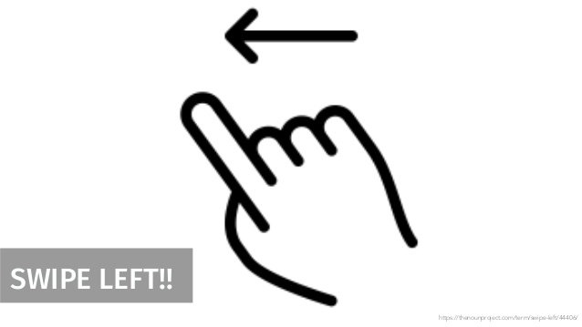

<ion-header>
  <ion-toolbar mode="ios">
    <header-logo></header-logo>
  </ion-toolbar>
</ion-header>

<ion-content class="ion-no-border">
  <ion-grid>
    <ion-slides class="slides" pager="true">

      <ion-slide class="slide">
        
        <div class="titre-slide">
          Suivi des Transactions
        </div>
        <div class="description-slide">
          Vous pouvez naviguer sur les dernières transactions en allant vers le bas de la page Mes transactions
        </div>
      </ion-slide>

      <ion-slide class="slide">
        
        <div class="titre-slide">
          Suppression des Transactions
        </div>
        <div class="description-slide">
          Vous pouvez supprimer une transactions en glissant votre doigt à gauche sur la transaction souhaitée
        </div>
      </ion-slide>

    </ion-slides>
  </ion-grid>
</ion-content>

<ion-footer class="ion-footer">
  <ion-grid>
    <ion-row>
      <ion-col>
        <ion-button (click)="navigateToLoginPage()" Size="large" expand="block">
          Se connecter
        </ion-button>
      </ion-col>
    </ion-row>
  </ion-grid>
</ion-footer>